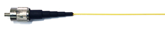
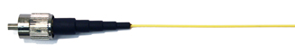
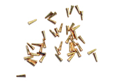

|  | Affiliated Institutions and Departments Massachusetts Institute of Technology
Instructional Videos JoVE: Tetrode assembly for chronic in vivo recording
Open-source projects
Former Lab Members
Dan Bendor
|
© 2019 Wilson Lab ::: 43 Vassar Street, Room 46-5233 ::: Cambridge, MA 02139